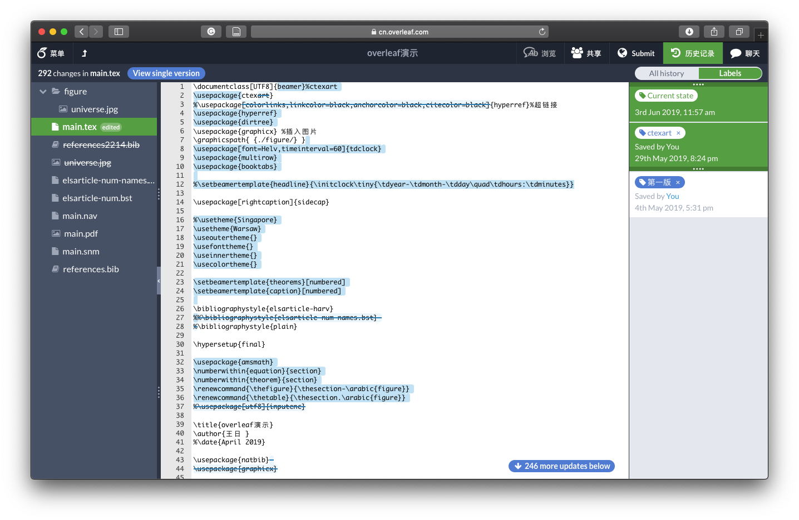

Overleaf功能介绍
前言
致谢
作者简介
1
Overleaf写作流程
1.1
注册账号
1.2
创建项目
1.3
个人写作
1.4
邀请合作者
1.5
聊天
1.6
论文投递
2
基本功能
2.1
菜单栏
2.2
编辑页面
2.3
下载pdf和tex源文件
2.4
界面设置
3
特色功能展示
3.1
本地和服务器同步
3.2
合作编辑
3.3
历史版本和修改记录
3.4
参考文献整合
4
缺陷和不足
4.1
订阅费用
4.2
常用符号少
5
示例项目
6
其他工具
6.1
公式
6.2
表格
6.2.1
xtable包
6.2.2
Excel2LaTeX
6.2.3
LaTeX中合并单元格
7
一些模板
7.1
学位论文模板
7.2
ElegantLaTeX
7.3
beamer主题
附录
A
余音绕梁
参考文献
本书由 bookdown 强力驱动
Overleaf功能介绍
第 3 章
特色功能展示
3.1
本地和服务器同步
3.2
合作编辑
3.3
历史版本和修改记录

历史版本
3.4
参考文献整合